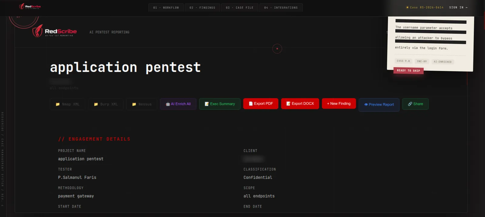
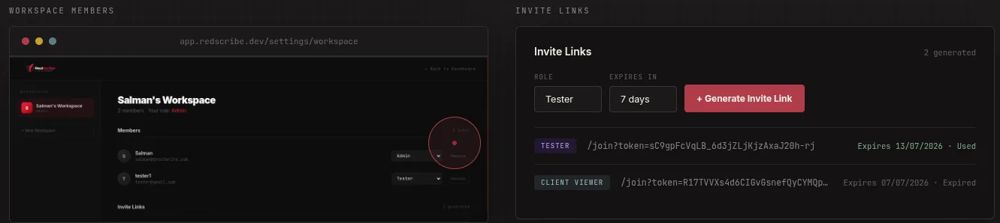

Smart parsing
Nmap XML with service, OS and script detection, Burp issue exports with request and response, and Nessus results. Nikto, SSLScan, ffuf and Nuclei are next.
Case study · 02
AI-powered pentest reporting, built by a pentester for pentesters.
Pentesters can spend 30–40% of an engagement writing the report. RedScribe is built to cut that to under an hour: upload your scan files, let AI parse, deduplicate and enrich every finding, then export a professional PDF or DOCX. And when no scanner found it, you add it by hand.


Add findings by hand, or import Nmap, Burp Suite and Nessus results.
AI writes business impact, remediation, attack scenarios, CVSS suggestions and CWE/OWASP mapping.
Edit in a live split-screen preview, rewrite for a different audience, reorder, attach evidence.
An executive summary, severity heatmap and overall risk score.
PDF and DOCX export, or a read-only share link for the client.
Nmap XML with service, OS and script detection, Burp issue exports with request and response, and Nessus results. Nikto, SSLScan, ffuf and Nuclei are next.
Business impact, specific remediation steps, attack-scenario narratives, CVSS score and vector suggestions, CWE and OWASP mapping.
Technical, Executive, Compliance or Concise, generated on demand for description, business impact and remediation.
A split-screen editor: what you edit appears formatted instantly. Drag-and-drop ordering persists to the database.
Screenshots and files attach to a finding, are stored server-side and are embedded straight into the exported PDF.
A multi-page PDF (cover, index, risk overview, findings, confidentiality) and DOCX, with a severity heatmap and risk score.
SQLi, XSS, CSRF, RCE, SSRF, auth bypass, IDOR and more, in a searchable gallery that pre-fills the fields.
Chain findings into a narrative attack path, with severity and notes for each step.
Organizations with Admin, Tester and Client Viewer roles, expiring invite links, and read-only client share links.
Scanner-independent by design. No tool detected it? Add it manually. RedScribe never limits you to what scanners find.
An abstracted AI layer puts Gemini first and local Ollama behind it as a free, private fallback. Swapping providers is a config change, not a rewrite.
Evidence lives with the finding and lands in the PDF automatically, not in a folder on a desktop.
Unguessable, revocable, optionally expiring share links with PDF and DOCX download. Nothing to install or explain.
Status: the frontend is live; the backend currently runs locally, so hosted login and API calls won’t resolve until deployment is finished. Anthropic, OpenAI and Groq providers are planned through the same interface.